Первый русский театр
Волковский театр в Ярославле — первый русский театр. Он основан в 1750 году, на несколько лет раньше того, как первый профессиональный театр появился в столице. Сегодня это федеральное государственное учреждение культуры с двумя сценами и почти пятью десятками спектаклей в текущем репертуаре. В 2024 году театр открыл 275-й юбилейный театральный сезон, и к этому событию ему нужен был новый сайт.
«Для «Редстар» сотрудничество с Волковским театром — большая честь и особая ответственность. Мы гордимся тем, что уже много лет работаем с первым русским театром и помогаем ему развивать цифровое пространство. Новый сайт и Волковская энциклопедия стали одним из самых масштабных и значимых проектов агентства: в нём соединились современные технологии, история театра и большая совместная работа наших команд»
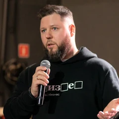
Олег РодинГенеральный директор «Редстар»С чем к нам пришли
Формально запрос звучал просто: ускорить сайт и обновить визуал. К юбилейному сезону театр готовил ребрендинг — новый фирменный стиль, шрифты, фирменная арка. Под этот стиль нужен был новый сайт.
Предыдущий сайт тоже был разработан нами. Все эти годы мы сопровождали его и хорошо знали задачи театра. За восемь лет техническая основа сайта существенно не менялась: все обновления касались, главным образом, визуального оформления. При этом объём материалов рос. К началу нового проекта на ресурсе накопилось 6 344 страницы: афиша, действующая труппа, архивные спектакли, биографии и исторические публикации – все находилось в одной структуре.
Из-за накопленного массива данных страницы загружались медленно, во время ожидания зритель видел прелоадер. Объем материала не позволял театру показать свою историю как ценность: она просто затрудняла путь к покупке билетов. Прежнюю техническую основу и структуру нужно было пересмотреть с учётом новых задач.
Историческим материалам требовалась отдельная навигация, а актуальной афише и покупке билетов — более прямой пользовательский сценарий.

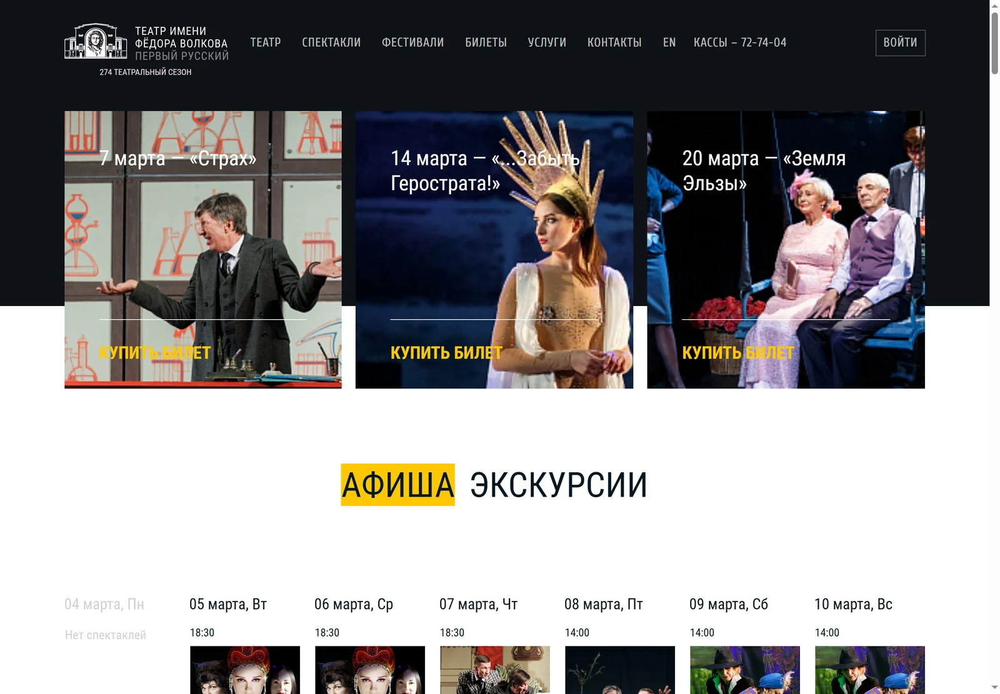
Что мы предложили
В процессе обсуждения задачи клиента родилась гипотеза, что у сайта театра не одна аудитория, а две. Первой нужно выбрать спектакль, найти удобную дату и быстро купить билет. Второй — найти сведения об артисте или постановке прошлых лет, посмотреть запись спектакля, изучить публикации.
Пытаться закрыть эти запросы единым сайтом — значит не закрыть ни один из них. Поэтому мы предложили разделить актуальную жизнь театра и исторические материалы на два связанных ресурса: основной сайт и Волковскую энциклопедию.
Сегодня в театре
Выбрать спектакль, найти удобную дату и купить билет.
volkovteatr.ruИстория театра
Найти артиста или постановку прошлых лет, изучить архив.
encyclopedia.volkovteatr.ru«Мы не сделали два разных сайта. Мы сделали один проект, но разделили смыслы»
Основной сайт: день сегодняшний
На сайте volkovteatr.ru теперь находится только то, что касается сегодняшней жизни театра. Здесь зритель может посмотреть афишу, познакомиться с постановками основной и камерной сцен, найти информацию о посещении театра.
Афиша собрана в календарную сетку с фильтрами по месяцу и сцене, информацией о наличии билетов. Раздел «Новости» представлен на главной странице в формате, визуально напоминающем «сторис».

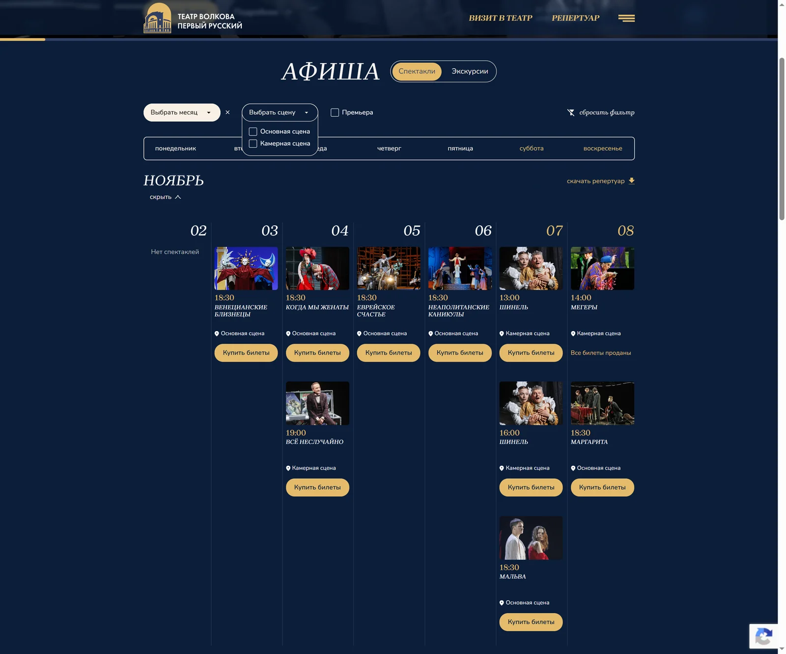

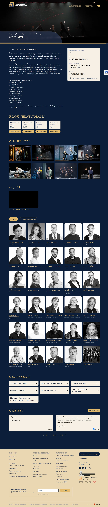

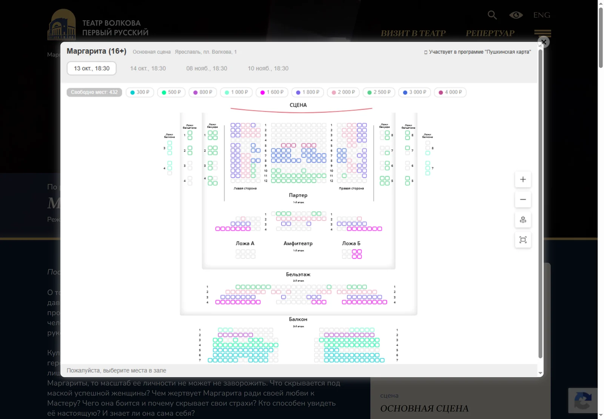
Раздел «Визит в театр» содержит сведения, которые нужны зрителю до посещения: покупка и возврат билетов, льготы, Пушкинская карта, правила, план зала, 3D-тур, экскурсии и сувениры. Раньше эта информация находилась в разных разделах, теперь её можно найти в одном месте.
Для отдельных сценариев предусмотрели лист ожидания билетов и заявку на групповое посещение.

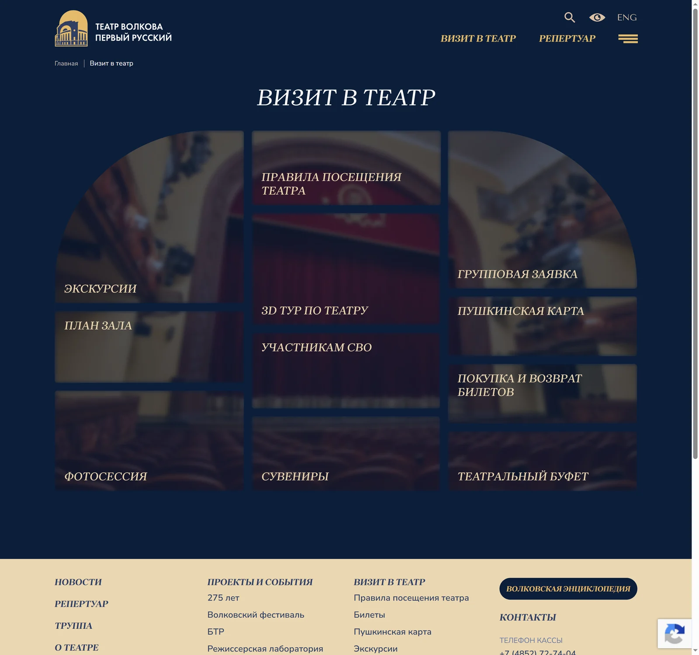
Волковская энциклопедия: история театра
На encyclopedia.volkovteatr.ru мы создали отдельный справочник по истории театра. В нём 2 291 страница: сведения о людях и постановках, исторические публикации, книги, фотографии и видеоматериалы.
В энциклопедии собраны 1 223 персональные страницы людей, связанных с театром. Здесь можно найти артистов, режиссёров, художников, композиторов, авторов, представителей дирекции и других участников создания спектаклей. Отдельно представлены сотрудники театра — участники Великой Отечественной войны.
В энциклопедии представлены 746 спектаклей. Постановки можно искать по сезонам и алфавиту, выбирать разделы русской классической, советской, современной отечественной и зарубежной драматургии. Отдельные подборки посвящены постановкам на камерной сцене и детским спектаклям.
Кроме этого — гастроли по России и за рубежом, гости волковской сцены, виртуальная онлайн-библиотека из 45 книг, публикации в прессе по пяти историческим периодам, фильмы о театре, видеозаписи спектаклей и роли волковских актёров в кино.

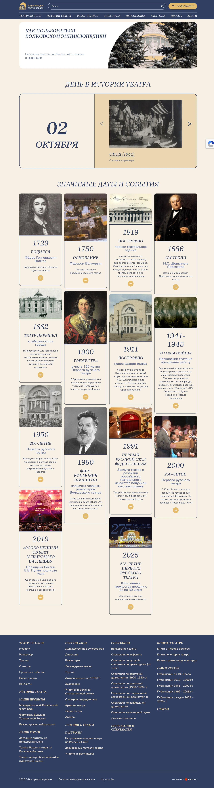

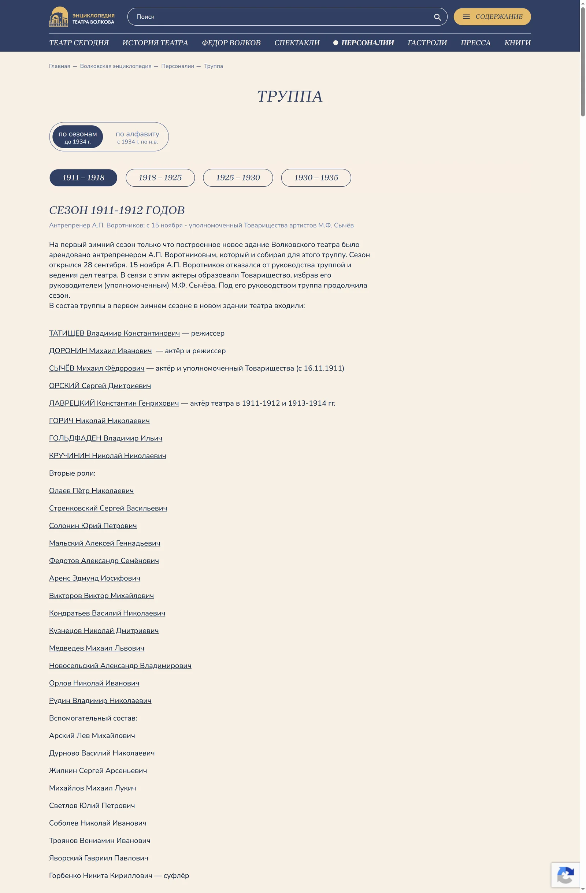

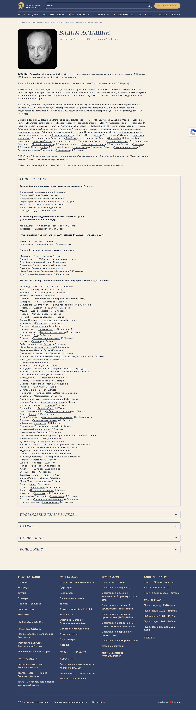
Как это устроено внутри
Энциклопедия выглядит просто, и эта визуальная простота — самое сложное, что в ней есть.
Внутри страницы энциклопедии связаны между собой скриптами. На странице артиста можно посмотреть его роли, постановки, награды и публикации о нём. На странице спектакля — увидеть участников его создания. Связи между материалами настроены и запрограммированы, потому что при таком объёме ручная настройка связей просто физически невозможна.
Как мы это делали
Разработка шла классически. Договорённости фиксировали в проектно-технической документации (более 60 страниц), которая стала общей основой для дизайна, разработки и согласований.
- АналитикаИзучили цели, задачи и аудиторию, собрали логическое ядро будущей структуры. Посмотрели, как устроены сайты всех российских театров — драматических, оперных, балетных, иммерсивных и т. д.
- ПрототипыНа этом этапе утверждали только структуру, логику, пользовательские сценарии, десктопную и мобильную версии.
- ДокументацияПроектно-техническая документация постранично описывала, что содержит каждая страница, какие на ней будут блоки, где связка с билетной системой.
- Стайл-чекПредложили несколько вариантов визуальной концепции на примере главной страницы.
- ДизайнОтрисовка в трёх разрешениях: десктоп, ноутбук, мобильный. Mobile first.
- ВёрсткаЗа два месяца перевели согласованные макеты в веб-страницы. Работу сдавали постранично, чтобы команда театра могла последовательно оценивать реализацию интерфейсов.
- ПрограммированиеРеализовали сайты на 1С-Битрикс и настроили связи между материалами.
- НаполнениеСамый долгий этап. О нём ниже.
Дизайн защищали перед дирекцией
Визуальную концепцию мы показывали не только маркетологу. Стайл-чек смотрели художественный руководитель театра, народный артист России Валерий Юрьевич Кириллов и дирекция целиком.
Основой стал новый брендбук театра. Остановились на тёмной теме с насыщенными оттенками. Тёмная палитра позволила выстроить визуальную связь с театральным пространством. Страницы воспроизводят атмосферу зала перед началом спектакля - свет приглушён, а на сцене светло.
Фирменная арка из брендбука превратилась на сайте в сквозной элемент дизайна.

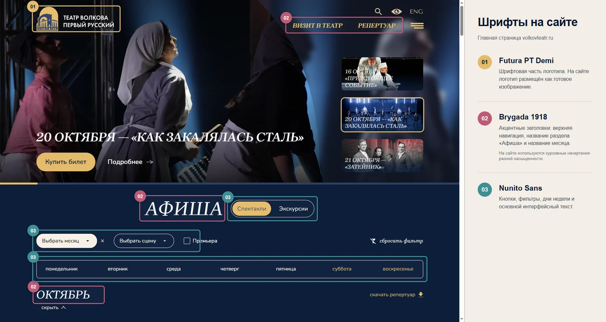

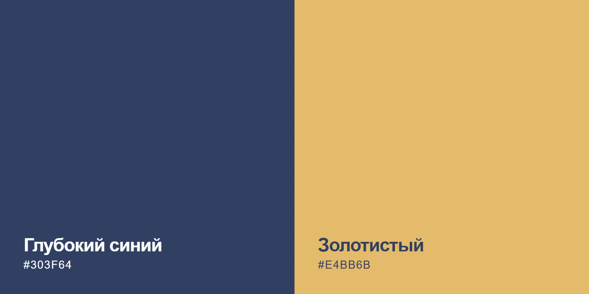

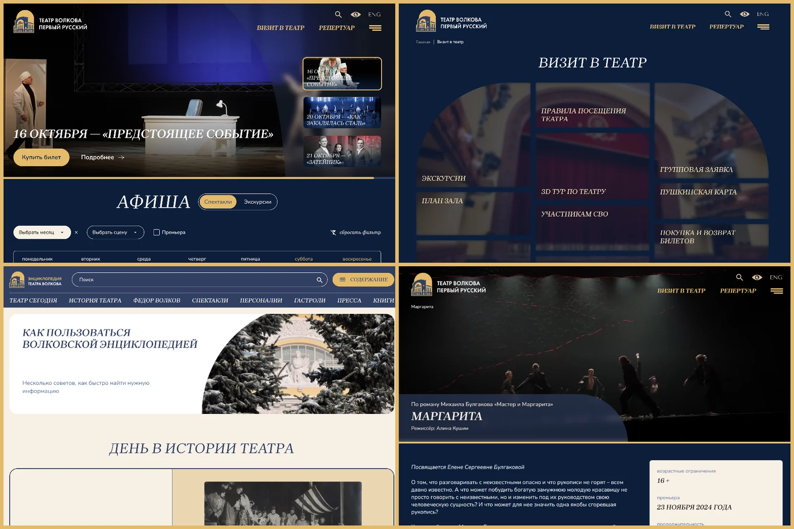

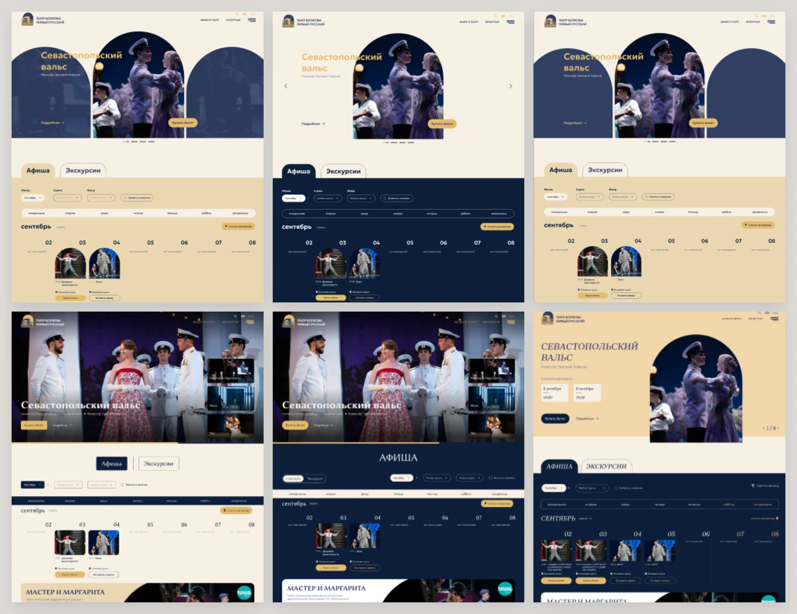
Самое трудное оказалось не в коде
Наполнение энциклопедии потребовало отдельной работы с историческими материалами. Поля старой и новой систем различались, из-за чего автоматический перенос потребовал бы дополнительной проверки каждой страницы.
Поэтому 2291 страницу энциклопедии наполняли вручную. На это ушёл год — дольше, чем на аналитику, дизайн, вёрстку и программирование вместе взятые. Энциклопедия запустилась через полгода после основного сайта и дозаполнялась до конца года.
Отдельным пластом работы стал поиск материалов для Волковской энциклопедии. Архивные фотографии искали в фондах театра и семейных альбомах. Книги для виртуальной библиотеки собирали чуть ли не поштучно. Некоторые фотографии актёров прошлого века сохранились в единственном экземпляре.
Волковскую энциклопедию лично вёл заведующий литературной частью театра Андрей Вениаминович Григорьев. Весь массив фотографий и видео, который делает эти сайты живыми, собирала и оптимизировала команда театра.
Что под капотом
- CMS
- 1С-Битрикс, «Управление сайтом — Малый бизнес».
- Билетная система
- UBSystem, встроена модальным окном.
- Пушкинская карта
- отметка у участвующих спектаклей и отдельный фильтр в репертуаре.
- PRO.Культура.РФ
- подключён обязательный для учреждений культуры трекинг.
- Аналитика
- Яндекс.Метрика с вебвизором, картой кликов и электронной коммерцией.
- Адаптивность
- три разрешения, mobile first. Кроссбраузерность — Chrome, Safari, Firefox, Opera, Яндекс.Браузер.
Запуск сайта
Сайт был готов к переезду в конце декабря 2024 года, но запустили его позже.
Предновогодние недели для театра — самое горячее время: ёлки идут без перерыва, по несколько спектаклей в день, билетная система под нагрузкой. Переключать домен в такой момент означало рисковать продажами в единственный период, когда они идут сплошным потоком. Мы дождались снижения пиковой нагрузки и переехали в январе.
Новый сайт разместили на хостинге, прежний перенесли на другой домен и закрыли от индексации. Для переходов со старых адресов настроили 301-редиректы.
Что получилось
В результате работы театр получил основной сайт для актуальной афиши и зрительских сервисов и отдельную энциклопедию исторических материалов. В новой структуре эти задачи имеют собственную навигацию. На страницах энциклопедии связаны персоналии и постановки, а фирменный стиль театра применён к интерфейсам обоих ресурсов.
Основной сайт · сравнение марта 2024 и марта 2026 по Яндекс.Метрике

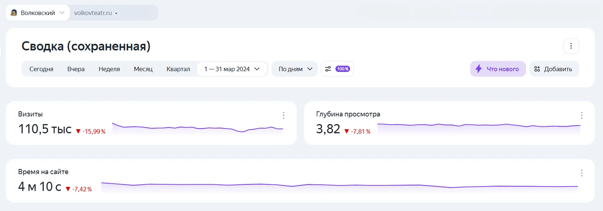

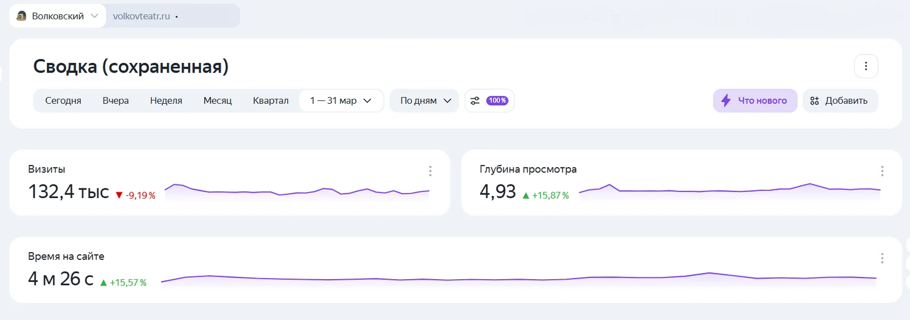
Отзыв театра
«С «Редстар» мы работаем давно, и за это время убедились: они хорошо знают театр и понимают, насколько важно здесь не потерять ни зрителя, ни саму историю театра. В новом проекте команда внимательно отнеслась к обеим задачам — и к удобству афиши, и к созданию Волковской энциклопедии. Мне близок такой подход: когда люди не просто выполняют техническое задание, а вместе с нами думают о том, что в итоге увидит зритель»
Проект продолжается
Редстар работает с Волковским театром 11 лет: мы разработали и сопровождали прежний сайт, а после запуска новых ресурсов продолжили техническую поддержку и развитие проекта. Сейчас перестраиваем раздел «Труппа» в энциклопедии. Он будет раскрываться по сезонам, чтобы читатель мог посмотреть состав театра в конкретном году, его руководство и постановки.
Детальные разделы Волковской энциклопедии сегодня охватывают материалы с начала XX века. Команда продолжает дополнять их и расширять исторический охват.
«Новый сайт — это не точка. Это дверь, которая открыта, и мы движемся дальше»
Над проектом работали
Волковский театр
- Кириллов Валерий Юрьевичхудожественный руководитель театра
- Григорьев Андрей Вениаминовичзаведующий литературной частью
- Анастасия Колесникованачальник отдела развития
- Алексей Куринзаместитель начальника отдела развития
Редстар
- Ксения Виноградоваруководитель проектов по разработке сайтов
- Полина Ушаковадизайнер
- Антон Щукинfrontend разработчик
- Ахтер Энтониbackend разработчик
- Анна Капустинакоммерческий директор
- Олег Родингенеральный директор